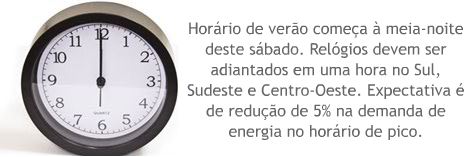

<!-- Desenvolvedor: Leandro Fortaleza -->
<!doctype html>
<html lang="pt-br">
	<head>
		<title>alt_a003</title>
		<meta charset="utf-8">
		<script src="../wilib/js/lib/require.js"></script>
		<script src="../wilib/js/app.js"></script>

		<link rel="stylesheet" href="../wilib/css/font-awesome.css">
		<link rel="stylesheet" href="../wilib/css/estilo.css">

		<!-- main -->
		<script>
			require(['../wilib/js/lib/alternativa_boliche'], function (edi) {

				edi.setConfig({// configurando o EDI
					icone: 'exclamacao',
					titulo: 'Leia os textos a seguir e responda corretamente sobre que códigos<br>de linguagem são usados em cada caso. ',
					mascote: 'mascote'
				});

				var btns = {
                    tela1:{
                        texto:'',
                        btns:[
                            {texto: 'CONOTAÇÃO', dataCorreta: false},
                            {texto: 'DENOTAÇÃO', dataCorreta: true}
                        ]
                    },
                    tela2:{
                        texto:'',
                        btns:[
                            {texto: 'CONOTAÇÃO', dataCorreta: true},
                            {texto: 'DENOTAÇÃO', dataCorreta: false}
                        ]
                    },
                    tela3:{
                        texto:'',
                        btns:[
                            {texto: 'CONOTAÇÃO', dataCorreta: true},
                            {texto: 'DENOTAÇÃO', dataCorreta: false}
                        ]
                    }
                };

				var config = {
					width: 120,
					height: 50,
					left: 225,
					top: 150,
					colunas: 2,
					margin: 5,
					padding: 5,
					cor: '#fff',
                    boliche: false
				};

				function callback (a) {
					setInterval(function(){$('#textoBox').css('background', '#FFF');}, 10);
                    if(edi.telaAtual() == 1){
                        barraMsg(a?'Muito bem! O texto utiliza palavras com sentido real, por tanto,<br> neste caso a linguagem usada é a denotação.':'Atenção! Perceba que o texto utiliza palavras com sentido real. Que linguagem é essa, Denotativa ou Conotativa? Pense com calma!', {height:80});
                    }

                    if(edi.telaAtual() == 2){
                        barraMsg(a?'Muito bem! O texto utiliza palavras com sentido figurado, por tanto,<br> neste caso a linguagem usada é a conotação.':'Atenção! Perceba que o texto utiliza palavras com sentido figurado. Que sentido é esse?', {height:80});
                    }

                     if(edi.telaAtual() == 3){
                        barraMsg(a?'Muito bem! A linguagem poética utiliza muito a Conotação.':'Atenção! Esta é uma linguagem poética, utiliza muito o sentido figurado das palavras. Pense um pouco mais!', {height:80});
                    }
				}

                edi.alternativa_boliche(btns, callback, config);//iniciando o EDI
                    
                });
		</script>

		<style>
			#conteudo {
				height: 315px;
			}
		</style>
	</head>

	<body>
	</body>
</html>
